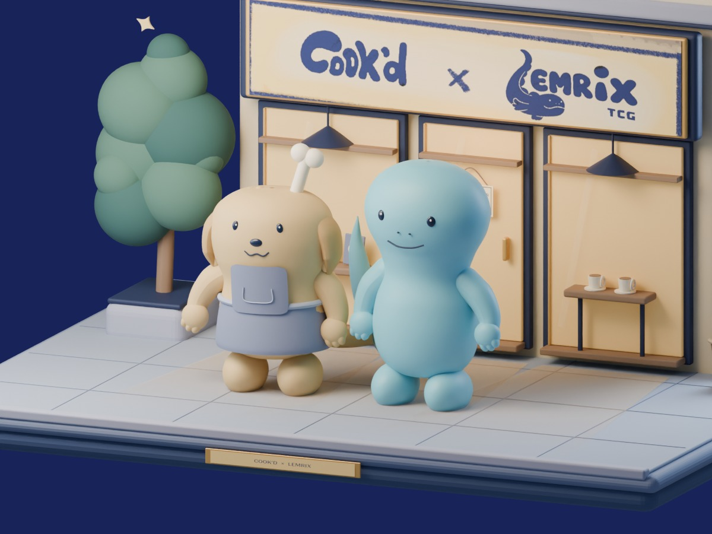
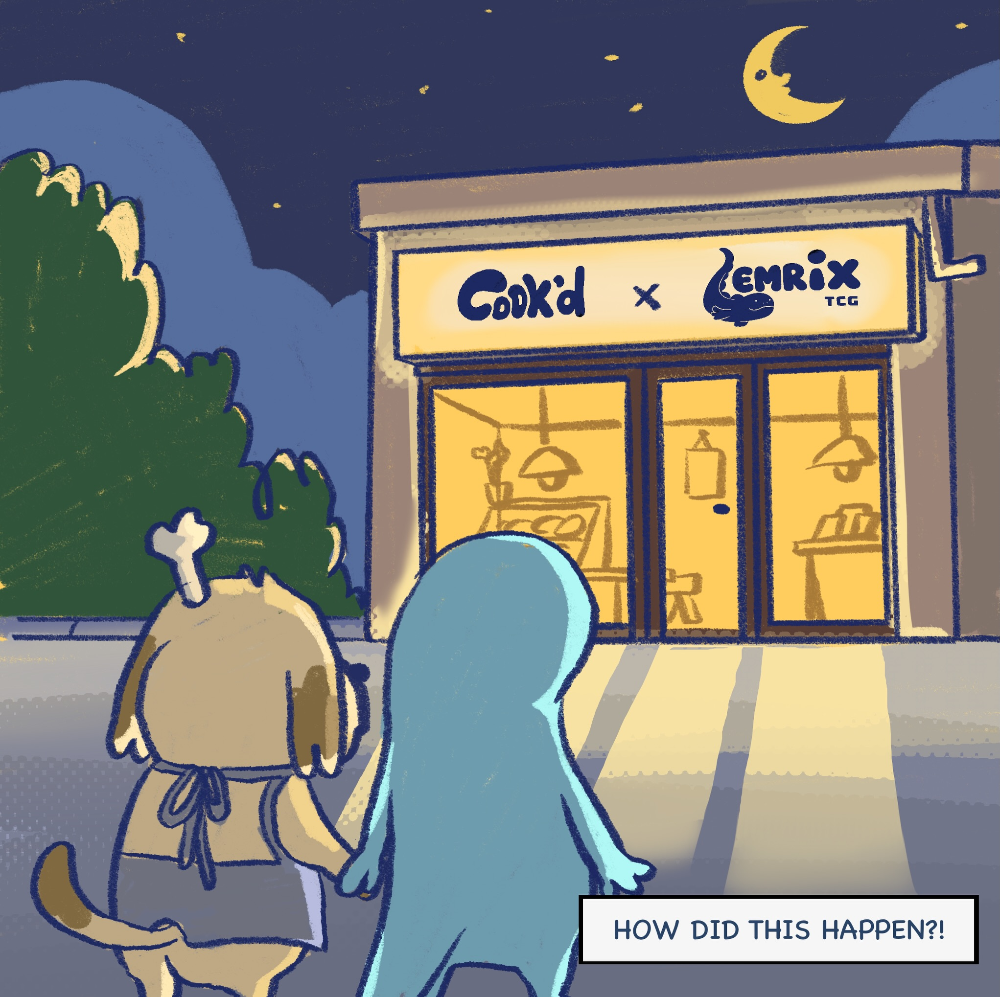

Something’s
cooking.
Explore the Cook’d × Lemrix storefront study.


Loading the storefront…
This device couldn’t open the 3D scene.
The original artwork is here instead.
Cook’d × Lemrix storefront
Cook’d × Lemrix
Back to LemrixExplore the Cook’d × Lemrix storefront study.


Loading the storefront…
This device couldn’t open the 3D scene.
The original artwork is here instead.
Cook’d × Lemrix storefront